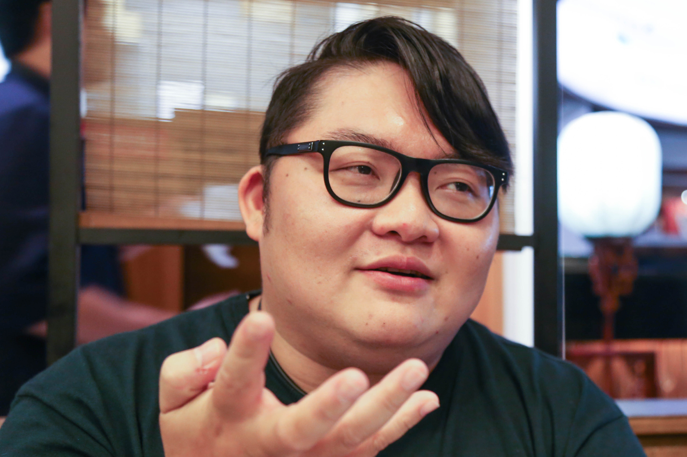
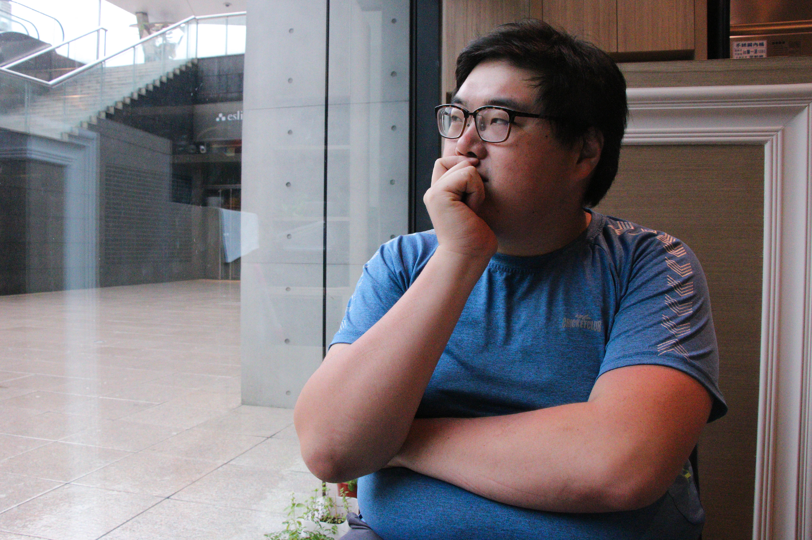

不想瘦？胖子：想被當成普通人看待
第一部、你這麼胖不行
我爸認為女生不要太胖，從小要我減肥，他說一個月減五公斤，就有獎金。我媽為了我的健康，曾帶我去吃減肥餐。因為胖，我被取過各種難聽的綽號。小時候的我很沒自信，會哭、會難過，但也不能怎麼樣。
談起童年被家人要求身材、被同學取笑的痛苦回憶，黃冠潔「哈哈哈哈哈」的大笑聲中帶了點苦澀，她從不抱怨或抗議：「我沒有溝通，我就是做。」
長大的世界不歡迎胖子 家庭互動影響自我認同
大部分的胖子從小胖到大。父母原本不以為意，甚至會說：「胖胖的很可愛。」直到他們察覺孩子的身材持續等比例放大，大人的眉開眼笑開始皺成一團，胖從「可愛」變成了「可憐」。
小學有次和家人坐車去玩，經過便利商店時，大家都下車買東西吃，我也想買布丁，但我媽說不准，死都不讓我買。她說：「妳已經那麼胖了，還吃布丁！」我記得自己看著窗外，我就哭了。
當時的曾維萱不懂，為什麼「胖」就不能享有與別人相同的權益？胖孩子很早就從家人的互動中領會，長大的世界對像自己這般身材肥胖的人，有差別待遇。
我從小到大就一直是胖胖的。如果不是被長輩不斷提醒「妳要減肥」、「妳這麽胖不行」，我想我會很快樂。因為在日常生活中，一直被他人的言語貶低自己的價值，我才變得那麼沒有自信。
▎Bernice 認為長輩對胖的貶低言語會打擊胖孩子的自信。（攝影／林梵謹）
二八年華的 Bernice 對自己的身心狀態有很成熟的觀察。她表示小時候常為了身材與媽媽起衝突，例如媽媽看不慣她愛吃美食，或責備她的穿著顯胖。
父母不希望孩子肥胖的理由，大致能分成兩種，一是健康考量，二是受到主流審美觀影響；多數父母不希望孩子因外型「輸在起跑點」，或想保護孩子免於他人的欺侮或歧視。
Bernice 說，曾有很長一段時間不能理解媽媽為什麼批評親生女兒？隨著年紀增長才逐漸解開心結。
儘管肥胖不見得是後天造成，父母直覺仍歸咎孩子吃太多、不運動或太懶惰，無形中強化「胖」在身體上的負面價值。當胖孩子沒辦法脫離「胖」的狀態時，會遭到罪惡感和自卑感的糾纏，也會基於「爸媽是為我好」的心理感到非常矛盾與自責。
在管教上，家長可以減少批評，改以實際行動鼓勵孩子一起運動，提升健身減肥在健康面向的正向效果。小學教師黃志嘉表示，更重要的是讓胖孩子清楚知道：「胖」只是一種身體狀態，與為人好壞無關。
第二部、胖孩子的教育
我小三轉學到桃園讀書，必須走很遠的路回家，那時有兩個孩子在我身後一邊丟石頭，一邊喊我「胖子！」我媽了解事情經過後，隔天就帶著我到對方家中理論，要求他們向我道歉。
黃志嘉從小就胖，他深受母親的影響，被欺負的時候就事論事，從不把「胖」當免死金牌，也不因此自怨自艾。
教育兒童胖瘦無關人格 鼓勵胖孩子理性反抗
某天上課，老師說了一則「河馬要搬家」的故事，全班都笑成一團，他們嘲笑班上一位圓圓胖胖的小男孩，就是那隻河馬。胖男孩氣著哭喊：「你們吵什麼吵！」他認為班上的同學老是因為他胖，就找機會欺負他。
黃志嘉解釋，胖的小孩內心比較脆弱，聽到別人說自己胖，容易反應過大、情緒激動，同儕衝突也更多。他告訴胖男孩：「如果有人說你『胖』，先不要生氣或難過，『胖』很正常。如果你認為『胖』不好，你才有問題。你應該要先想自己是不是一個正確無害的人？」
▎身為胖子的教師黃志嘉認為：「不給胖孩子特權，是最好的教育。」（攝影／林梵謹）
黃志嘉認為，要讓胖孩子了解，遭遇不如意時，最重要的是檢討行為，而不是體型。資歷近20年的國中輔導老師陳珊怡表示，追究起許多學生霸凌事件的原點，大多是被霸凌者的言行舉止太白目，很少是純粹針對外貌的霸凌。
「大部分國中小學生的語言能力，沒辦法很精準地表達自己為何討厭一個人。」陳珊怡說：「視覺的事物最能具體描述，『胖』才常被當成霸凌的箭靶。」即便霸凌者是厭惡對方的行為或性格，也會說成「你胖所以我討厭你」，或是用「你好胖」當成欺侮的理由。
黃志嘉分享一次學生之間的肢體衝突：「在一場躲避球遊戲中，我規定球不能砸臉，還是有位學生砸到一位胖學生的臉，立刻找藉口：『誰叫他的面積這麼大？』我很生氣地把他們兩個人都抓出場外。」
黃志嘉問胖學生，被別人說「面積大」會不會不開心？胖學生本不以為意，聽了立刻說：「會！」黃志嘉責備犯錯的學生：「面積大惹到你了嗎？砸臉就是不對。」要求他向對方道歉並和好。
「雙方要互相了解彼此的難處。」黃志嘉說，這個年紀的孩子言行大多是無心，砸到臉的學生的思維要矯正，以免變成一種壞習慣；胖學生也要意識到，當有人做出侵害到身體的行為時，不能就這樣算了，一定要懂得反擊。
黃志嘉認為：「不給胖孩子特權，是最好的教育。」老師或家長的責任是引導他們理性判斷對錯，衝突發生時不用偏頗任何一方，不需要特意將胖孩子當成受害者。當胖子長期被當成弱者對待，久了真的會認為自己什麼都做不好。
Bernice 說：「胖子不需要同情跟憐憫，只需要同理心。」
第三部、樂觀的隱形斗篷
高中時，我是熱舞社裡最胖的女生。身邊很多人抨擊：「這麼胖還敢跳舞？」也常被調侃：「是不是最近吃比較多？」我會開玩笑回應：「對啊，要不要一起吃？」
▎黃冠潔是一位優秀的舞者，面對身材的抨擊總以能力和幽默回擊（攝影／林梵謹）
黃冠潔高中加入熱舞社，開始站上舞台展現身材與舞技，卻因為體態肥胖而飽受取笑，但她總能幽默以對。
面對肥胖歧視 用樂觀隱藏自卑感
「班上的男生喜歡拿性開玩笑，他們跟我說：『妳老公一定會被壓死』。」外型圓胖可愛的 Bernice 說自己每天哭著上學，就因為男同學老愛宣傳她的體重；跟心儀的男生告白時，還被要求「減肥二十公斤」，Bernice 生氣地告訴對方：「我瘦二十公斤絕對找比你更帥的！」
「胖女生小時候，都會遇到一個嘴砲的男生。」郝天行回憶自己小時候好端端地坐著，突然有一個男生走過來說：「妳大腿好大。」然後跑掉，像是按下抽風機的按鈕，一個無聊的玩笑讓負面情緒隨即捲入郝天行的生活，她開始對自己的身材產生憂慮。
「國高中生的人生階段就是充斥這樣的屁孩文化。」朱志祥說，男生會欺負胖男生、對胖女生說沒禮貌的話，會想找身材姣好的女生交往，反之亦然。
孫家偉 說，在他國高中的時候，常被男同學動手動腳，甚至抓胸部嘲笑，但他會反過來用高大的體型抵抗。孫家偉告白時也被女生拒絕過，對方說：「我寧可跟矮子在一起，也不要跟胖子在一起。」
許多胖子遭受到不平等的對待時，便會反其道而行，以自嘲、幽默、搞笑等正向樂觀的言論和行為，拿回詮釋形象的優勢。
當別人向自己說起肥胖，朱志祥會毫不猶豫地說：「我胖我驕傲！」黃冠潔上台跳舞、面對質疑時會反擊：「大隻又怎麼樣？你會看得更清楚。」
黃志嘉有次搭乘擠滿人的小電梯，卻遇到每層樓卻都有人要搭的尷尬情況。他故意用身體堵在電梯門口，每次開門就搞笑地說：「不好意思～滿囉滿囉！」黃志嘉說，自嘲也是讓大家都好受一點的方式：「我把整件事幽默化，不會有人認為我是胖子死要搭電梯，反而不介意地笑了，我也覺得舒服多了。」
孫家偉卻認為，胖子如果不樂觀很難活下去。看起來開朗的形象，可能是別無他法：「如果不把自己經營成一個正面樂觀的人，就會被當成宅男或變態，沒有中間值。一定也要讓自己看起來樂觀，但我內心還是有自卑感。」
▎孫家偉認為，胖子的環境和生活經驗容易玻璃心或想很多。（攝影／林梵謹）
樂觀也不見得適用於每個人。林宜萱 表示，在國高中生的時候，試圖將自己塑造成搞笑諧星：「我個性就不是這樣，卻逼自己用這種方式得到認同，到頭來既不成功，也不快樂。」
第四部、不用胖定義胖子
有一次高中運動會，班上沒有人要參加跑步比賽，我就說我要跑，大家就覺得「怎麼可能？」後來我跑了全校第三名，全班都很驚訝。大家常常沒有看完胖子的努力，就先對胖子下定論。
胖子背負了許多對肥胖的刻板印象與成見，像是懶惰、笨手笨腳、動作很慢等等……「不要因為你胖，就什麼都做不到。」是黃志嘉的母親從小到大對他的惇惇教誨。
打破刻板印象 擁有專長建立自信
離開校園後，少了屁孩不經大腦的言語攻擊，歧視仍沒有消失。工作的主管或同事表面上不會直白地攻擊胖子的外貌，但孫家偉發現：「胖讓人在職場上變得不起眼。」
「胖子一定要有專長。」朱志祥主修鋼琴，現在是法國里昂音樂學院的第一獎碩士，他認為專業能力帶來的成就感，有助於自信的提升。「在工作的時候，很多人會忘記我是胖子。」黃志嘉主修長笛，現在不僅致力於青少年和兒童的音樂教育，同時是編舞老師、舞臺表演者和電視節目藝人。
體型高壯的孫家偉，則從社交舞中建立自信。

▎孫家偉看起來文靜，卻很熱衷參加社交舞活動與陌生同好共舞。（攝影／林梵謹）
孫家偉說：「跳舞是一件讓我蠻開心的事，但很多人稱讚我，都是基於『我是胖子』來稱讚。 黃志嘉強調，他期望能打破大眾想像胖子的規則，更希望大家能把胖子當普通人對待。
我的成就感不是因為「我是胖子」而得來，是因為大家認同「我」。不需要給胖子特別多的鼓勵或關心，反而會讓胖子更感覺自己是不是哪裡不好。把胖子當成普通人，相信胖子也能做到一般人能做到的事。
黃冠潔接觸街舞之後，發現自己是個熱愛舞台的表演控。隨著演出次數的增加，「妳表現很好！」「妳很棒，我記得妳！」這類的觀眾回饋逐漸發酵，讓黃冠潔找到肯定自己的價值，不再用胖定義自己。
「當我在做一件得心應手的事時，會覺得很快樂，我就不會很在意別人看我的眼光。」黃冠潔笑容很堅定，她說：「原來我沒那麼糟糕，反而越來越喜歡自己。」